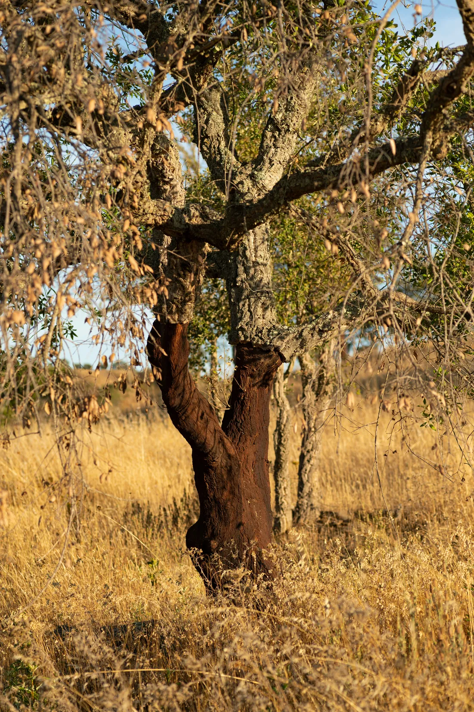

Sùaru
Isolante naturale in sughero
Realizzato con cortecce di sughero (Quercus suber) stagionate all'aria aperta, triturate in granuli e assemblate in pannelli attraverso un ciclo di pressatura a caldo con una piccola quantità di collanti ad uso alimentare. Il sughero protegge dal caldo, dal freddo e dall'umidità, garantendo al contempo la traspirazione.